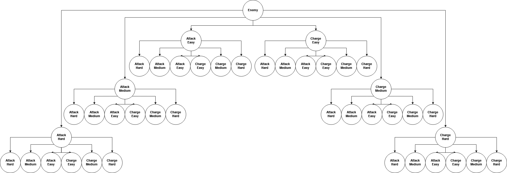
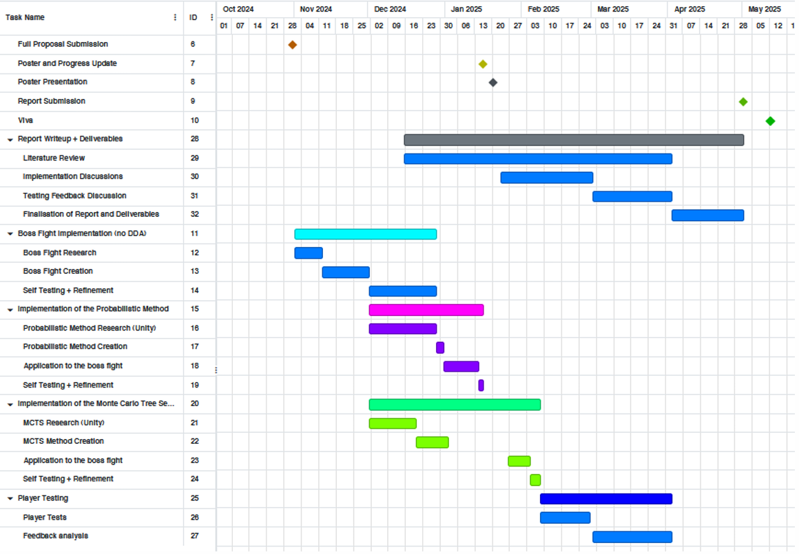

Boss Fight
Boss Fight is my dissertation project. I'm using Dynamic Difficulty Adjustment (DDA)
on a boss fight encounter to establish the worth of such techniques. The two types of DDA I'm using are
the Probabilistic Method (PM) and Monte Carlo Tree Search (MCTS). I will establish 'worth' by assessing how these methods
compare against a control mode in terms of technical viability and player engagement/ enjoyment.
Check out my repository here and read through my poster (below) that I've created to showcase my progress so far (as of January 2025).

Dynamic Difficulty Adjustment
Dynamic Difficulty Adjustment (DDA) is a method of adjusting the difficulty of a game to suit the specific player by changing during play.
I've created a difficulty value that can be dynamically changed to alter the difficulty of the boss enemy. This value affects enemy speed and damage,
frequency, accuracy and size of attacks, length of telegraphing (warning) before attacks, likelihood of attacks, and projectile patterns.
Click here to watch a video showcase (with voiceover) of my project so far, or watch some gameplay (no voiceover) below:
The Probabilistic Method
The Probabilistic Method (PM) establishes probability using progression trajectories (Xue et al. 2017) which are essentially ways of
measuring progression. My project uses trajectories such as: how many times the player has lost or reset, the health and accuracy of both player and enemy, and elapsed play time. Using these trajectories,
the chance of the player losing is calculated in real time and applied to inversely adjust the difficulty.
Below is my current algorithm for the Probabilistic Method as applied to the boss fight scenario. See my comments in the code for explanation.
public class ProbabilisticMethod : DynamicAdjustmentMethod { PlayDataSingleton p = PlayDataSingleton.instance; //Contains all variables to be adjusted. float maxDifficulty = 1.8f, minDifficulty = 0.6f, playTimeWeighting = 0.5f; private void Start() { methodName = "Probabilistic"; p.shortestPlayTime = 15f; p.longestPlayTime = 25f; //Default values used before enough playtime data is gathered. } public override void CheckForAdjustments() //Called by EnemyFSM when switching states. { //Only adjust difficulty if player or enemy has taken damage. if (p.enemyHealth == p.enemyMaxHealth && p.playerHealth == p.playerMaxHealth) p.difficulty = 1; else CalculateTrajectories(); } private void CalculateTrajectories() //Calculate trajectories needed to establish loss chance. { p.healthGap = (p.enemyHealth / p.enemyMaxHealth) - (p.playerHealth / p.playerMaxHealth); //Gap in health between player and enemy. p.playerAccuracy = p.playerHits / p.playerAttacks; p.enemyAccuracy = p.enemyHits / p.enemyAttacks; //How many hits player and enemy have landed out of how many attacks they've done. p.avgPlayTime = p.totalPlayTime / p.attempts; //Average elapsed play time per attempt. CalculatePlayTime(); } private void CalculatePlayTime() { if (p.playTime < p.shortestPlayTime) p.pr_loss = 0; /*p.pr_loss is our loss chance. If the player has not yet surpassed their shortest elapsed playtime, it is not regarded as possible for them to lose.*/ else if (p.playTime >= p.shortestPlayTime && p.playTime <= p.longestPlayTime) { float playTimeRange = p.longestPlayTime - p.shortestPlayTime; float playTimeGap = p.playTime - p.shortestPlayTime; p.pr_loss = (playTimeGap / playTimeRange) * playTimeWeighting; } /*Calculates the loss chance based on how far through the play time range the current elapsed playtime is. This calculation is given less weighting as it was found through testing that it strongly dictated the loss chance far more than the other calculations.*/ else if (p.playTime > p.longestPlayTime) p.pr_loss = playTimeWeighting; /*If the player has surpassed their longest elapsed playtime, the loss chance is maximum. This calculation is laso given less weighting as it was found through testing that it strongly dictated the loss chance far more than the other calculations.*/ CalculateHealthGap(); } private void CalculateHealthGap() { p.pr_loss += p.healthGap; //Adds health gap between player and enemy to the loss chance. if (p.pr_loss < 0) p.pr_loss = 0; else if (p.pr_loss > 1) p.pr_loss = 1; /*Apply bounds here to prevent skewing the next calculation if value is over 1 or below 0. This is necessary here as it is possible for the value to exceed its bounds at this point.*/ CalculateAccuracies(); } private void CalculateAccuracies() { if (p.playerHealth <= p.enemyDamage) p.pr_loss += p.enemyAccuracy; if (p.enemyHealth <= p.playerDamage) p.pr_loss -= p.playerAccuracy; /*If player or enemy are able to lose within one hit, apply the accuracy of their opponent to the loss chance.*/ ApplyBoundsToLossChance(); } private void ApplyBoundsToLossChance() { if (p.pr_loss < 0) p.pr_loss = 0; else if (p.pr_loss > 1) p.pr_loss = 1; //Apply bounds here to prevent skewing the final calculation if value is over 1 or below 0. AdjustDifficulty(); } public override void AdjustDifficulty() { float difficulty = ((1 - p.pr_loss) * (maxDifficulty - minDifficulty)) + minDifficulty; p.difficulty = difficulty; /*Inversely apply the loss probability within a range (between maxDifficulty and minDifficulty) to the difficulty value.*/ ChangeStaffColour(p.pr_loss); /*Aesthetic change for testing, displays difficulty from green (easiest) to red (hardest) on the enemy's weapon. The lighting map is applied as a secondary texture on the enemy sprite and acts as an emission map, which is used by the custom material to give a glow effect to desired areas of the sprite.*/ } private void ChangeStaffColour(float d) { enemyMat.color = new Color(255 - (d * 255), d * 255, 0); //Scales a colour from green (0,255,0) to red (255,0,0) with the difficulty value. } }
Monte Carlo Tree Search
Monte Carlo Tree Search (MCTS) is an algorithm that finds the optimal action by investigating random actions and then iteratively building a search tree with each node being an action. Instead of building
the whole tree, MCTS uses a simulation of what would happen if a particular set of actions was taken (Demediuk et al. 2017). The algorithm then chooses the next action to achieve the optimal outcome. My project uses 'actions' that
represent various changes to the difficulty of the enemy. The outcome that most fits the current difficulty is used.
See a diagram of how I will apply MCTS (with a depth of 3) to my boss fight scenario below:

Aim
The purpose of my technical implementation and research inquiry is to understand whether these approaches are technically viable and effective in increasing player engagement and enjoyment when used to dynamically adjust difficulty. Player testing will be carried out to establish the differences in player experience between the two approaches, as well as a 'control' mode that features no dynamic changes to difficulty.
Project Management
I've been using GitKraken Desktop for version control and working across devices (repository). I ensure that I commit often and keep my commit messages clear and concise. This allows me to quickly and easily revert changes and diagnose bugs by understanding what I have changed and when. Additionally, I've been using feature branches, specifically when importing packages such as UnityHFSM (since removed) and the Universal Render Pipeline as well as for implementing the adjustment methods. I store all my diagrams, notes and references on the cloud as to access them across devices, this is helpful as I often refer to timestamps on such things. At any given point during development, I have made sure to outline what I need to do next, so that I am not wasting time on this decision after completing a task. Lastly, I've prepared preliminary notes before each meeting with my dissertation supervisor.
See my current project plan (updated January 2025):
